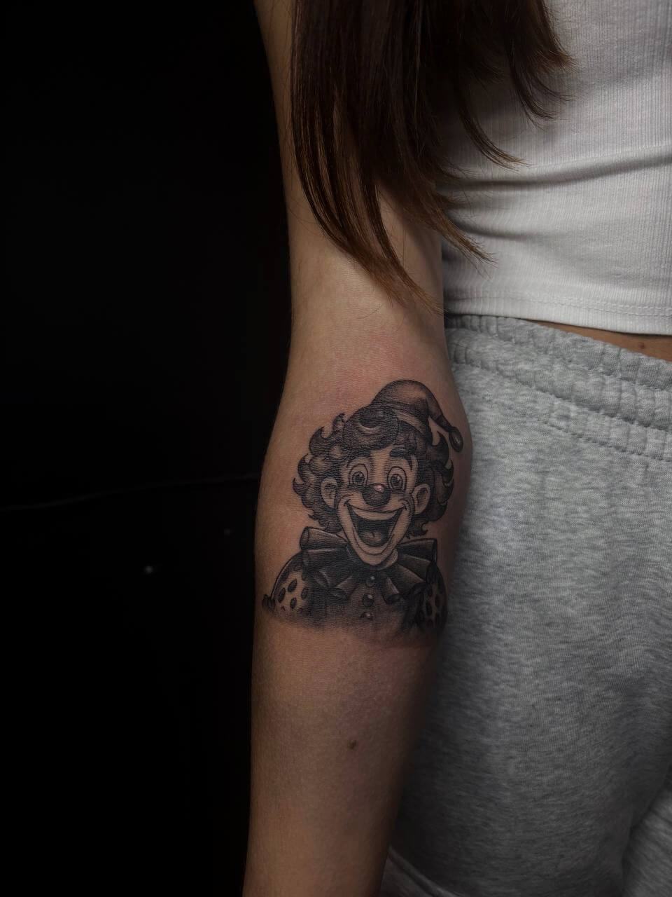
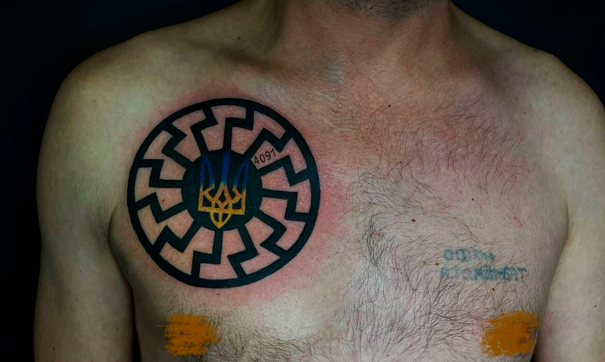

Наші нещодавні роботи

MINIMALISM TATTOO

REALISM TATTOO

JAPAN TATTOO
NEO TRADITIONAL TATTOO

MINIMALISM TATTOO
REALISM TATTOO
OLDSCHOOL TATTOO

MINIMALISM TATTOO
SCANDINAVIAN TATTOO

REALISM TATTOO

JAPAN TATTOO

MINIMALISM TATTOO

COLOR OLDSCHOOL TATTOO
MINIMALISM TATTOO

SCANDINAVIAN/UKRAINIAN TATTOO